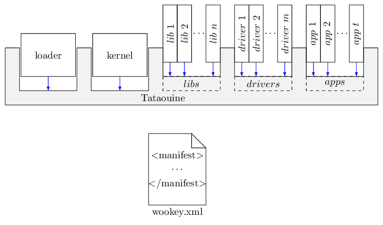

9.2. Tataouine and repo¶
The goal of Tataouine is to propose a fully modular Software Development Kit. As a consequence, the following items are not a part of Tataouine
- The applications
- The userspace drivers
- The userspace libraries and stacks
- The kernel sources
- The bootloader sources
- Any potential external libraries and tools
As a consequence, there is various repositories, one for each component:
- one repository per application
- one repository per driver
- one repository per library
- one repository for EwoK (the kernel)
- one repository for the bootlader
In order to deploy a given project SDK, we use repo. This allows to download the various repositories and deploy them properly in the adequate places automatically.
{kind=link}
Repo uses manifest files, that are hosted in a single, independent, git repository. In our case, this repository is named manifest.git in the WooKey repository list.
This manifest allows to deploy the entire WooKey project.
Hint
This structure permits to replace any item with your own in another manifest. You can create your own project manifest file with your own applications list, reducing or increasing the number of drivers or libraries as needed
9.2.1. Initialize the SDK¶
Initialize the SDK is made using the standard repo command:
repo init -u https://github.com/wookey-project/manifest.git
repo sync
The manifest name can be replaced by any of the existing manifests of the manifest.git repository, depending on your needs.
These commands create a wookey directory in the current directory, containing all the extracted repositories in order to build the project.
If you wish to modify one of the repositories of the SDK, use the following command:
cd path/to/the/repository
repo start mybranch
This will create a named branch in the repository.
Hint
The repo tool command reference can be read here